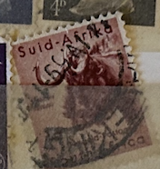
| SOURCE | TITLE| IMAGE MATCH | click to source page |
| HipStamp | South Africa Scott's #242 Gnu - Used | Africa - South Africa, General Issue Stamp / HipStamp | 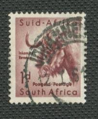 |
| eBay | South Africa Foreign 1d Stamp Used - #A902 | eBay | 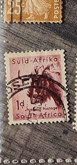 |
| eBay | George VI (1936-1952) South African Postal Stamps (Pre - 1961) for sale | eBay | 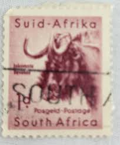 |
| eBay | Flowers South African Stamps (1961-Now) for sale | eBay | 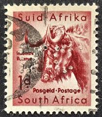 |
| A few from the Cape today. Last pic are forgeries | 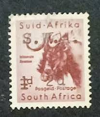 | |
| HipStamp | South Africa 201 - Used - Gnu (5) | Africa - South Africa, General Issue Stamp / HipStamp | 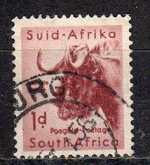 |
| Alamy | South african postage stamp hi-res stock photography and images - Alamy | 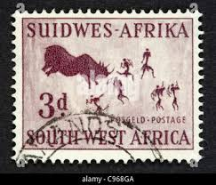 |
| Shutterstock | Namibia Stamp: Over 259 Royalty-Free Licensable Stock Photos | Shutterstock | 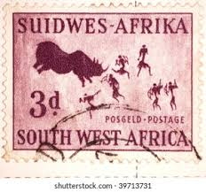 |
| Alamy | Flag of south africa ww2 hi-res stock photography and images - Alamy | 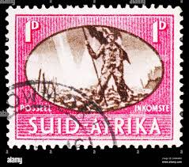 |
| Poppe Stamps | Poppe Stamps: South Africa, 1945, 108, Victory, Soldiers, Flags, Victory, Soldiers, Flags - stamps for sale by theme and country | 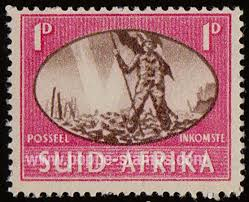 |
| ebid.net | Norway 1969 SG634 No15 King Olav V 2k Used Stamp on eBid United Kingdom | 177674431 | 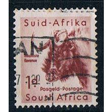 |
| HipStamp | South Africa 201: 1d Black Wildebeest (Connochaetes gnou), used, F-VF | Africa - South Africa, General Issue Stamp / HipStamp | 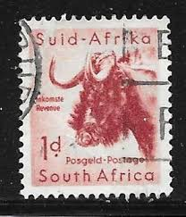 |
| eBay | South Africa/SUID AFRIKA ~ Animal ~ 1d Red Stamp ~ Cancelled/Used ~c.1943 | eBay | 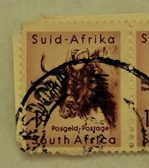 |
| Shutterstock | 11+ Thousand Black Wildebeest Royalty-Free Images, Stock Photos & Pictures | Shutterstock | 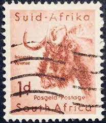 |
| eBay | Red Postage South African Postal Stamps (Pre - 1961) for sale | eBay | 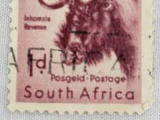 |
| eBay | Red South African Postal Stamps (Pre - 1961) for sale | eBay | 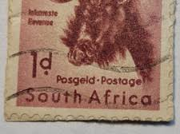 |
| eBay | Las mejores ofertas en Estampillas postales de sudafricana rojo (antes de 1961) | eBay | 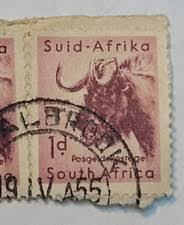 |
| Shutterstock | South Africa Circa 1939 Stamp Printed Stock Photo 71710537 | Shutterstock | 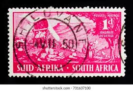 |
| HipStamp | South Africa Sc#100 MNH | Africa - South Africa, General Issue Stamp / HipStamp | 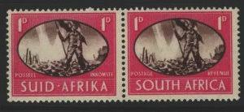 |
| Hi guys found this stamp in a book ...just how old it is and what's it's value. | 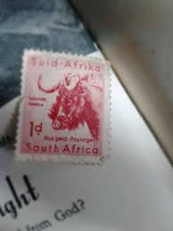 | |
| eBay | Stamp South Africa "Gnu" 1954 A101 sc# 201 1p rose brown | eBay | 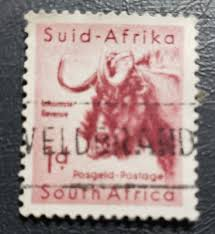 |
| Everypixel.com | SOUTH-WEST AFRICA - CIRCA 1952: A stamp printed in South-West Africa shows image of a woman, series, circa 1952 - Stock Image - Everypixel | 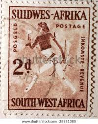 |
| HipStamp | South Africa-1954 SC# 208 68 Years OLD Stamps-Kudu Deer-Used Block Very Fine | Africa - South Africa, General Issue Stamp / HipStamp | 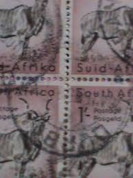 |
| eBay | South Africa B5-8 - Voortrekker - Dingaan Treaty - Drakensberg - Monument Pairs | eBay | 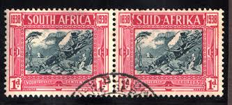 |
| Please, can anyone help tell me more about these stamps. Are they any value? | 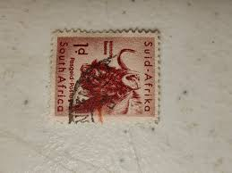 | |
| Bob Shop | Union of South Africa - Union of SA 1945: Victory Issue UMM Full Sheet with 1d "Barbed Wire" Variety: SACC 107a (See descr.) was sold for 61.00 on 8 Oct at 21:46 | 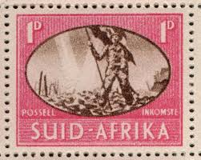 |
| Are these South African coin varieties scarce? | 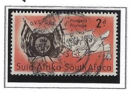 | |
| HipStamp | Antonios Philatelics / HipStamp | 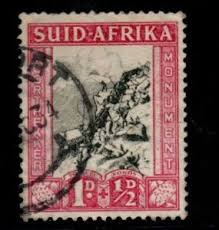 |
| eBay | Pictorial Cancellation Postage South African Postal Stamps (Pre - 1961) for sale | eBay | 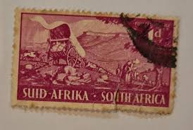 |
| some teeny stamps! : r/philately | 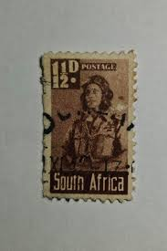 | |
| CollectorBazar | REPUBLIC OF SOUTH AFRICA SUID AFRICA EARLY ISSUE CARVAN CART NATIVES 1 D. FINE USED | 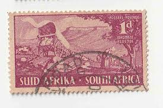 |
| What is this stamp worth? | 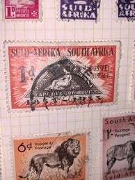 | |
| eBay | Brown Used South African Postal Stamps (Pre - 1961) for sale | eBay | 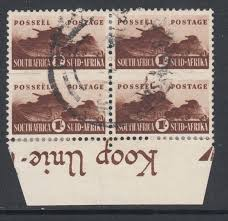 |
| Bob Shop | Union of South Africa - South Africa,1941, War Effort, 1/, tank, vertical pair, undated DE AAR barred parcel cancellation for sale in Hanover (ID:671574267) | 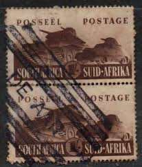 |
| eBay | SOUTH AFRICA 1p pair U plate flaw on one stamp, check them out! | eBay | 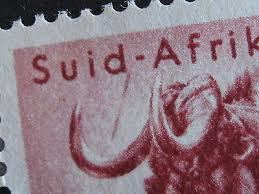 |
| eBay | George VI (1936-1952) Era South West African Postal Stamps (Pre - 1990) for sale | eBay | 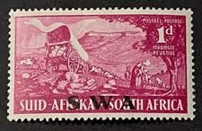 |
| HipStamp | SOUTH AFRICA; 1945 early Victory issue fine used 1d. pair | Africa - South Africa, Stamp / HipStamp | 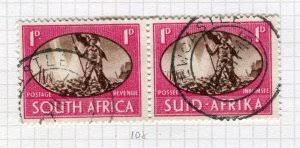 |
| Alamy | Aviator, postage stamp, South Africa, 1942 Stock Photo - Alamy | 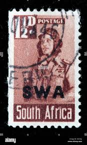 |
| Mystic Stamp Company | 249-51 - 1954 South West Africa - Mystic Stamp Company | 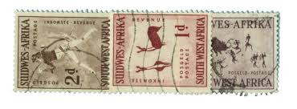 |
| HipStamp | Antonios Philatelics / HipStamp | 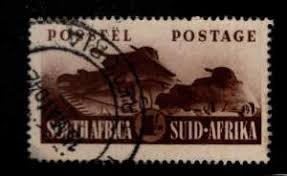 |
| eBay | South Africa Stamps, 1945 - 1946 | eBay | 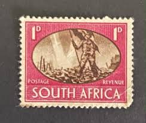 |
| Any help on history of these is appreciated. | 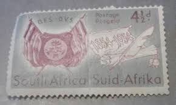 | |
| Alamy | Used in west africa hi-res stock photography and images - Alamy | 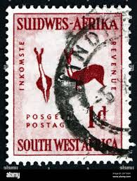 |
| eBay UK | 2 Stamps Width South African Stamps (Pre - 1961) for sale | eBay UK | 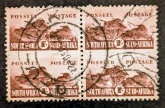 |
| Bob Shop | Namibia - SWA .1954 .Rock Carvings, 3d Rhinoceros Hunt was sold for 2.50 on 29 Apr at 09:53 by ZA_Moyra in Pietermaritzburg (ID:613991211) | 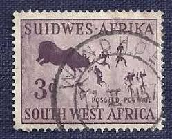 |
| Sale Antique | Mansehra | 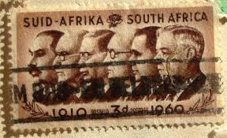 | |
| eBay | Suid Afrika Stamps for sale | eBay | 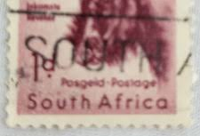 |
| eBay | Machine Cancel South African Stamps (1961-Now) for sale | eBay | 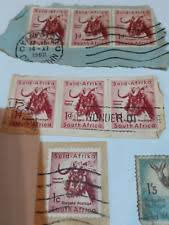 |
| eBay | South Africa, Scott #87, 6p Welder, Pair, Used | eBay | 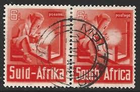 |
| BidCurios | South Africa - Used old stamp - Monument - (B-002/J6)a - BidCurios | |
| PicClick UK | SOUTH AFRICA 1948 Early Issue Fine Used 1.5d. Pair NW-157087 £0.99 - PicClick UK | |
| What is a reasonable offer for old South African stamps? | ||
| eBay | South West Africa Scott #160-162, 261-280, 343-358, 3 Sets, Mint OG NH | eBay | |
| PicClick UK | 69992 - GERMAN COLONIES: SWA Namibia - POSTAL HISTORY: COVER Windhuk 1906 KUB £89.25 - PicClick UK | |
| CollectorBazar | REPUBLIC OF SOUTH AFRICA SUID AFRICA 1954 MONOGRAM FLAGS F 2 D. USED | |
| eBay | South West Africa Scott #151 VF Used 1942 1 Shilling Overprint Pair | eBay | |
| Alamy | Suidwes hi-res stock photography and images - Alamy | |
| Anyone else here has a soft spot for South African stamps? : r/philately | ||
| Bob Shop | Union of South Africa - Union Roto Arrow pair WM. UP `Shuttered Window`.R 3,300+. MNH. SACC 46 v. See below. was sold for 308.00 on 2 Aug at 21:01 by reier in Prince Albert (ID:591772004) | |
| eBay | South Africa Stamps (1961-Now) for sale | eBay |